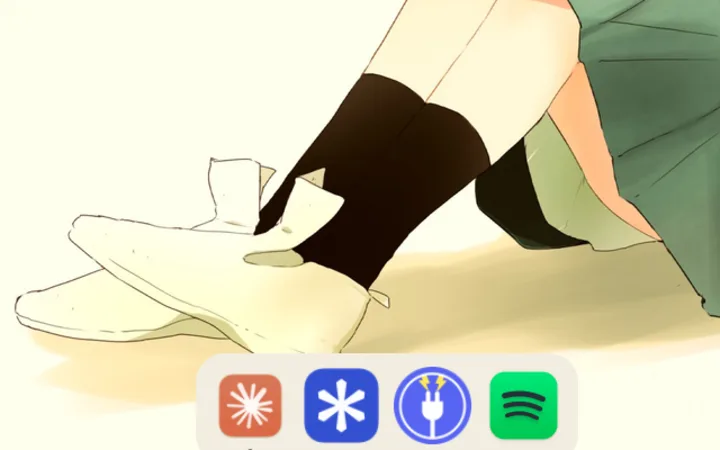

octopus
um shell m3 cozy pro niri. uma barra vertical minimalista na waybar, e tudo que é maior num companion em rust + gtk4.
o que tem dentro
superfícies opacas e tonais. cores do wallpaper. leve o bastante pra ficar em uns 45 mb parado.

central de controle
wi-fi, bluetooth, som, brilho, mídia e notificações, num lugar só.

dash
relógio, calendário, clima, a música com a letra, e um seletor de wallpaper.

spotlight
apps e as ações deles, calculadora, arquivos com /, energia com >.

tela de bloqueio
shapes m3 que giram e mudam a cada tecla, a letra sendo cantada, o clima.

dock
apps fixados e abertos, com magnificação. fixa, autohide ou inteligente.

configurações
estilo e posição da barra, widgets, dock, idioma, claro, escuro ou automático.
ele veste o seu wallpaper
escolhe um wallpaper e o matugen repinta tudo: a barra, os painéis, o rofi, o fuzzel e o resto do sistema. claro, escuro, ou o que a imagem pedir.
como as cores funcionaminstalar
no arch (ou o que tiver esses pacotes), o repo mora no próprio ~/.config/octopus.
git clone https://github.com/pxotitas/octopus ~/.config/octopus
~/.config/octopus/install.shdepois, no fim do ~/.config/niri/config.kdl:
include "~/.config/octopus/niri.kdl"dependências
pam waybar matugen matuwall awww cliphist wl-clipboard wtype playerctl cava brightnessctl networkmanager bluez-utils libpulse python unicode-emoji unicode-cldr fd gcc rofi gtk3 gtk4 gtk4-layer-shell ttf-material-symbols-variable rust
depois: os atalhos e o que dá pra mudar.